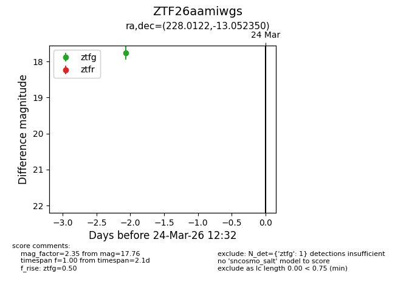
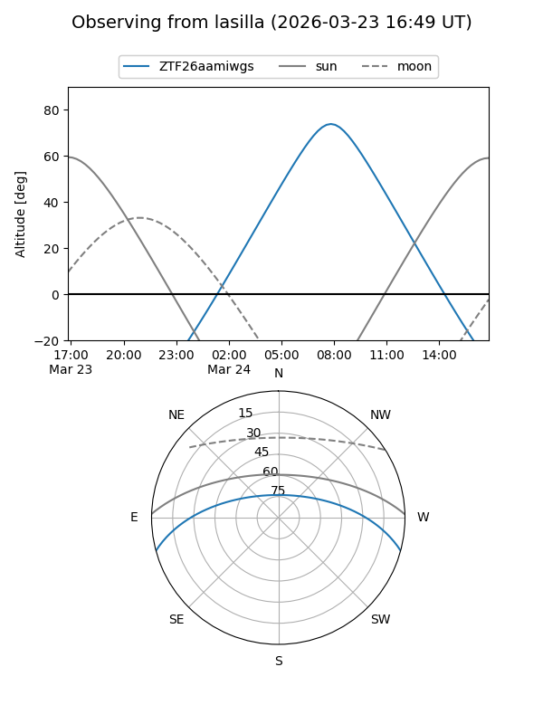
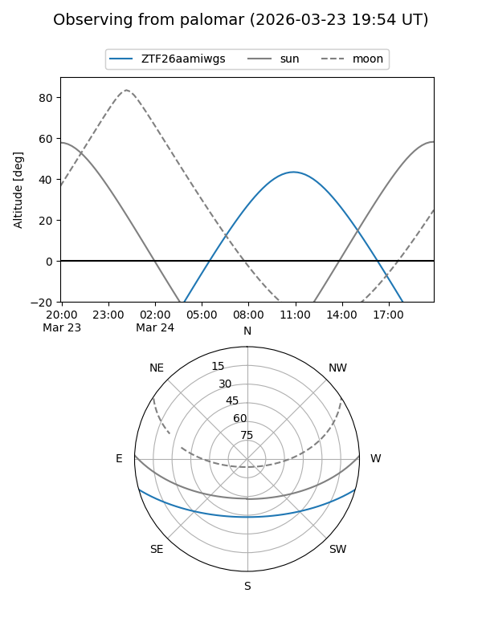

ZTF26aamiwgs
Target ZTF26aamiwgs at 2026-03-24 12:34
Aliases and brokers:
FINK: link
Lasair: link
ALeRCE: link
alt names
ZTF26aamiwgs (ztf,fink_ztf)
Coordinates:
equatorial (ra, dec) = 228.0122,-13.05235
equatorial (HMS+DMS) = 15:12:02.93,-13:03:08.46
galactic (l, b) = (347.7637,+37.29307)
Flags:
Photometry:
last ztfg=17.76
1 ztfg detections
Lightcurve

Visibility


Additional plots